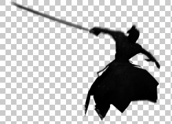

|  |
Pulin Pan(盘埔麟) Postgraduate students College of Computer Science and Electronic Engineering Hunan University Address: Room 434A, College of Computer Science and Electronic Engineering, Hunan University, Yuelu District, Changsha, Hunan, China, 410082 Email: panpulin@hnu.edu.cn |